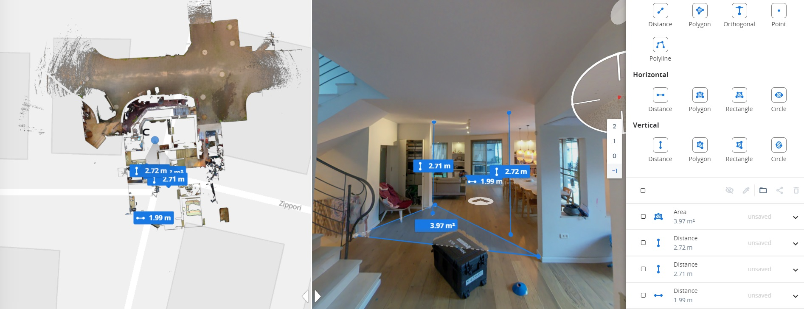
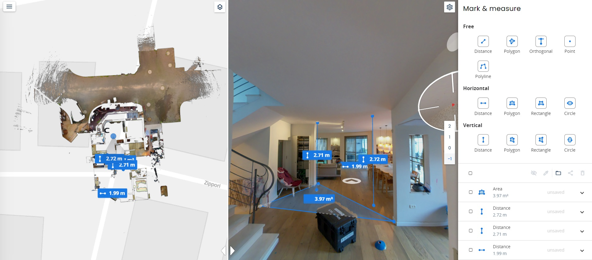
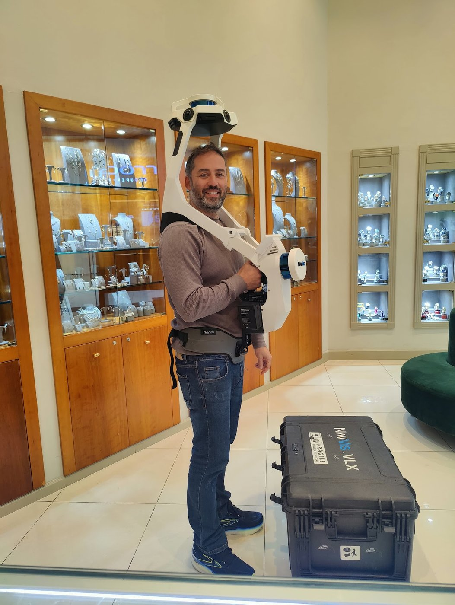

מדידת פנים נראית כמו משימה פשוטה: מטר, סרגל לייזר נקודתי ודף משבצות, וסוגרים חדר בכמה דקות. אבל דווקא בפשטות הזו מסתתרות הטעויות שמתגלות מאוחר מדי - בשלב התכנון, ולעיתים רק בביצוע, כשהן כבר יקרות לתיקון. ריכזנו את חמש הטעויות הנפוצות ביותר בתיעוד מצב קיים ידני, ובעיקר את הדרך להימנע מכולן בבת אחת.

חמש הטעויות שכדאי להכיר לפני שמודדים
הטעויות הבאות אינן נובעות מרשלנות אלא מהמגבלות של מדידה ידנית: היא נקודתית, תלויה באדם שמחזיק את המטר, ומתעדת רק את מה שחשבנו למדוד באותו רגע. נעבור עליהן אחת-אחת, ולצד כל טעות נסביר כיצד סריקת לייזר תלת-מימדית עוקפת אותה.
1. להניח שהקירות ישרים וכל הזוויות 90°
רוב התוכניות הידניות משורטטות מתוך הנחה שהחדר הוא מלבן מושלם. במציאות כמעט אף חדר אינו כזה: קירות סוטים, פינות אינן ניצבות, ותקרה עשויה לרדת בהדרגה. כשמתכננים ריהוט נגר, מטבח או חיפוי על בסיס ההנחה השגויה, הפער מתגלה רק כשמנסים להתקין. סריקת לייזר לוכדת את הזוויות והמישורים האמיתיים כפי שהם בשטח, כך שהתוכנית משקפת את הגיאומטריה בפועל ולא מלבן תיאורטי.
2. לפספס מידה או להשאיר נקודה עיוורת
במדידה ידנית מודדים רק את מה שזוכרים למדוד. עומק נישה, גובה אדן חלון, מיקום נקודת מים או פינה מאחורי ארון מובנה - כל אחד מהם עלול פשוט להישכח. ומה שלא נמדד בשטח, חסר. ההשלמה היחידה היא חזרה פיזית לנכס. בסריקה אין נקודות עיוורות: הסורק לוכד את כל מה שהיה גלוי בזמן הסריקה, וכל מידה שתצטרכו בהמשך כבר נמצאת בענן הנקודות.
3. לוותר על גבהים ומפלסים
מדידה ידנית נוטה להתמקד במישור הרצפה בלבד, ומתקבלת תוכנית שטוחה. אבל תכנון פנים חי בשלושה ממדים: הפרשי מפלס בין חדרים, ירידות תקרה, גבהי משקופים ומעברי צנרת גלויה. בלעדיהם קשה לתכנן תקרות אקוסטיות, תאורה שקועה או ארונות עד התקרה. הסריקה מתעדת את החלל בתלת-מימד מלא, וממנה מפיקים חתכים, חזיתות וגבהים מדויקים לצד תוכנית הרצפה.
4. טעות בהעתקה וברישום הידני
גם כשמודדים נכון, המספר עדיין צריך לעבור מהמטר לדף, ומהדף לתוכנית ה-CAD. בכל שלב כזה נכנסת אפשרות לטעות אנוש: ספרה שהתחלפה, מטר שנקרא הפוך, שרטוט שלא עודכן. טעות של כמה סנטימטרים בהעתקה יכולה להתגלגל לאורך כל התוכנית. בסריקה, המקור הוא ענן הנקודות עצמו - מדידה דיגיטלית ישירה, בלי שרשרת העתקות ידנית שבה נופלות הטעויות.

5. להישאר בלי תיעוד לחזרה
אחרי שהמודד עזב, מדידה ידנית משאירה בידכם רק את מה שרשמתם. אם עולה שאלה חדשה - התאמה של פריט, בדיקת מרווח, מידה שלא חשבתם עליה - אין למה לחזור מלבד נסיעה נוספת לנכס. סריקת לייזר מייצרת גם סיור וירטואלי 360° הניתן למדידה: אפשר לחזור אל הנכס דיגיטלית בכל עת, לנווט בו ולמדוד ממנו ישירות, גם חודשים אחרי שהמדידה בשטח הסתיימה.
הטעות היקרה ביותר במדידת פנים היא לא מספר שגוי - היא מידה שכלל לא נלקחה. סריקה מלאה מבטלת את שתי האפשרויות.
איך סריקת לייזר מבטלת את חמש הטעויות בבת אחת
המכנה המשותף לחמש הטעויות הוא אותה מגבלה: מדידה ידנית היא נקודתית וסלקטיבית. סורק לייזר תלת-מימדי נייד מהמתקדמים בעולם עובד אחרת לגמרי. הוא יורה 1,200,000 קרני לייזר בשנייה, וכל קרן חוזרת הופכת לנקודת מדידה מדויקת. במקום להחליט מראש מה למדוד, הסורק לוכד את החלל כולו - ומתקבל ענן נקודות שהוא עותק דיגיטלי מלא של המקום, בדיוק של עד ±6 מ"מ.
המשמעות המעשית פשוטה: הזוויות אמיתיות כי נמדדו ולא הונחו; אין נקודות עיוורות כי הכל נלכד; הגבהים קיימים כי הסריקה תלת-מימדית; אין טעויות העתקה כי המקור דיגיטלי; ותמיד יש למה לחזור, כי הסיור נשמר. חמש הטעויות נסגרות במהלך אחד, בלי להאריך את הזמן בשטח - 120 מ"ר נסרקים בדקות בהליכה רציפה.
בקשו שהתוצר יכלול סיור וירטואלי 360° הניתן למדידה. כך תוכלו לבדוק כל מידה בדיעבד - עומק נישה, גובה משקוף או מרווח מעבר - בלי לתאם ביקור נוסף בנכס.
מה מקבלים בסוף - ולמה זה מונע את הטעות הבאה
מסריקה אחת מפיקים בדיוק את התוצר שבו אתם עובדים, כך שאין צורך בהמרות ידניות שמכניסות טעויות חדשות. אפשר לקבל תוכניות AutoCAD (DWG/DXF) מסודרות בשכבות, מודל Revit / BIM ברמת LOD 200-300, מודל SketchUp, את ענן הנקודות הגולמי (E57/RCP/LAS), טבלת שטחים ואת הסיור הווירטואלי 360°. כל התוצרים נשענים על אותה מדידה מדויקת, ומגיעים נקיים ומסודרים תוך מס' ימים בלבד.
העבודה מתחילה בשיחת אפיון קצרה להבנת הצורך וסוג התוצר, וממשיכה למדידה בשטח וללא שיבוש הפעילות במקום. לעומק על השירות, ראו את עמוד מדידה אדריכלית המלא.
